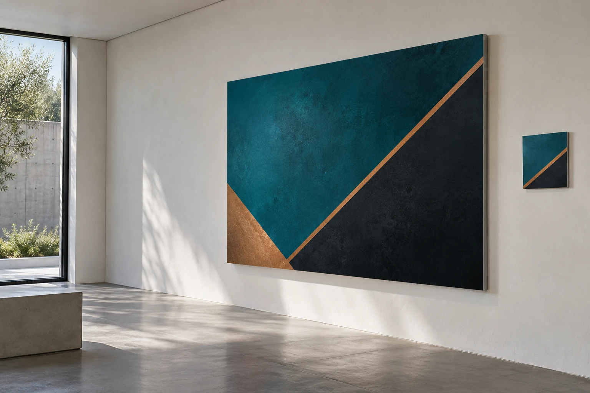

INDUSTRY ROUTING / HDC
Print shaped around the work.
Different sectors bring different surfaces, formats and handling needs. Start with the application; HDC reviews the production route against the actual job.

Labels, decals, packaging print and branded inserts considered around the product, dispatch format and how the customer encounters the brand.
Labels · packaging · commercial print ↗ 02Apparel & fashionProduct labels, packaging, hang-tag print and retail graphics planned for the garment, pack and point of sale. Textile transfer is not offered through this route.
Labels · packaging · retail print ↗ 03Bakery & confectioneryPackaging and printed matter routed by format, stock, food-contact requirements supplied by the client, artwork and finishing scope.
Packaging & commercial print ↗ 04Restaurants & food serviceMenus, packaging print, labels, signs and physical brand graphics considered for the application, location and material.
Commercial print · labels · environments ↗A ROUTING GUIDE, NOT A PORTFOLIO
Start with the physical job.
These are common application pathways, not claims about completed HDC client projects. Material suitability, production method, quantity and finishing are confirmed after reviewing the actual brief.
Prepare a project enquiry